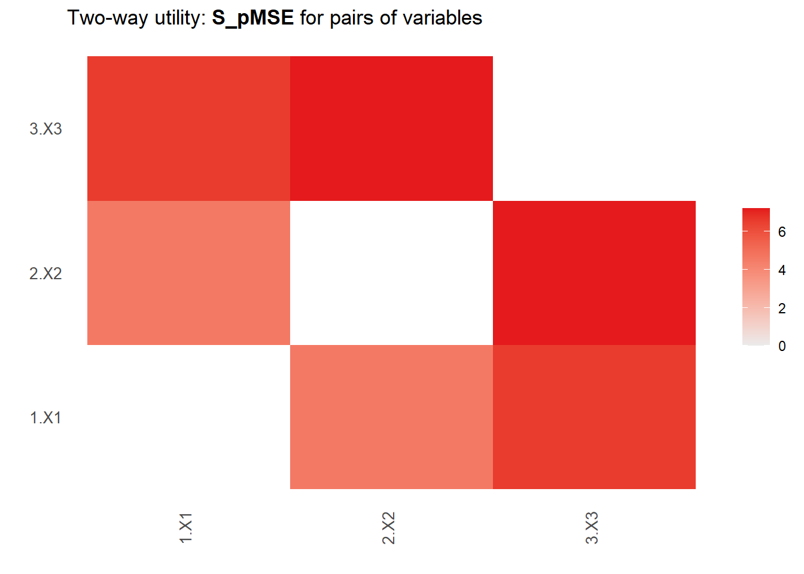
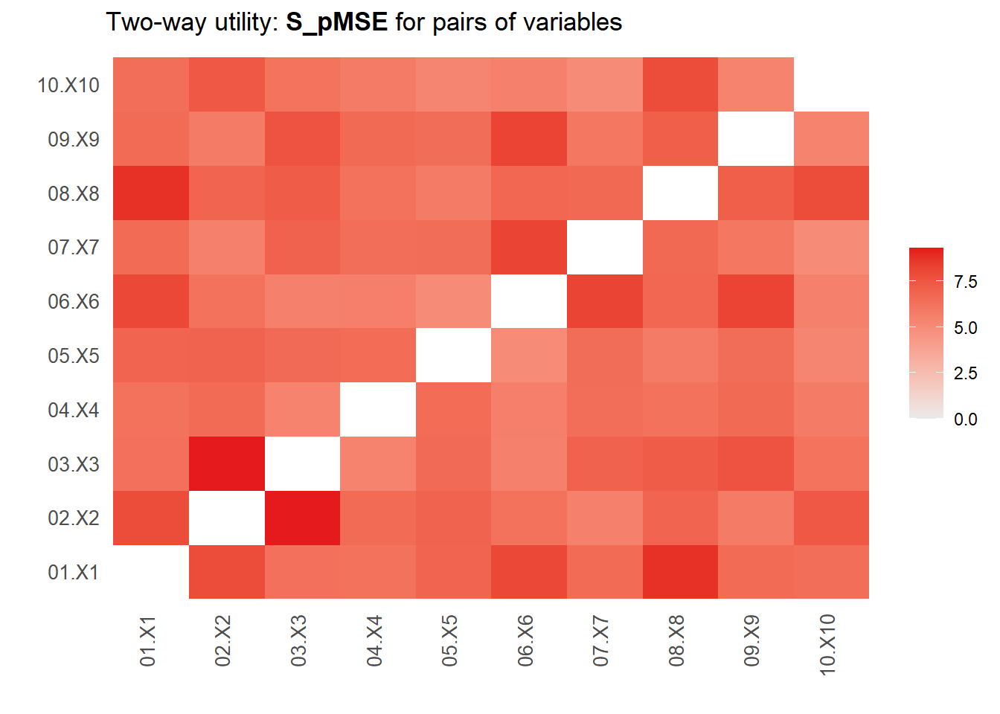
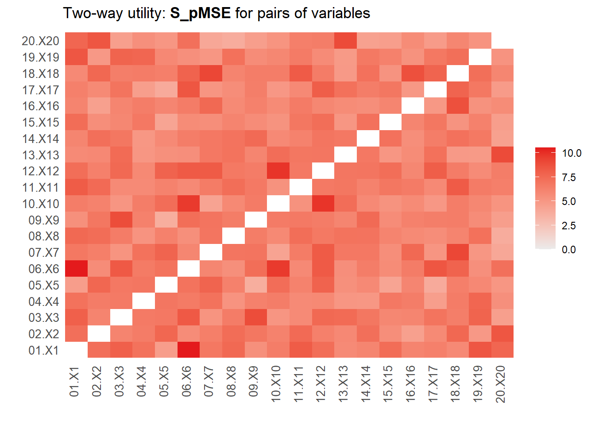

library(synthpop)
library(patchwork)
library(purrr)
library(dplyr)
library(glmnet)Can the \(pMSE\) detect missing relationships between variables?
The answer is “No; at least it’s not very good”.
Properties \(pMSE\) for CART, logistic regression and lasso regression
Generate data
Three predictor variables
set.seed(123)
N <- 500
r <- 0.5
P3 <- 3
M3 <- rep(0, P3)
SR3 <- matrix(r, P3, P3)
diag(SR3) <- 1
SS3 <- diag(P3)
XR3 <- rnorm(N*P3) |> matrix(N, P3) %*% chol(SR3)
XS3 <- rnorm(N*P3) |> matrix(N, P3) %*% chol(SS3)Ten predictor variables
P10 <- 10
M10 <- rep(0, P10)
SR10 <- matrix(r, P10, P10)
diag(SR10) <- 1
SS10 <- diag(P10)
XR10 <- rnorm(N*P10) |> matrix(N, P10) %*% chol(SR10)
XS10 <- rnorm(N*P10) |> matrix(N, P10) %*% chol(SS10)Twenty predictor variables
P20 <- 20
M20 <- rep(0, P20)
SR20 <- matrix(r, P20, P20)
diag(SR20) <- 1
SS20 <- diag(P20)
XR20 <- rnorm(N*P20) |> matrix(N, P20) %*% chol(SR20)
XS20 <- rnorm(N*P20) |> matrix(N, P20) %*% chol(SS20)Compare real and synthetic data
CART <- map2_dbl(list(XR3, XR10, XR20),
list(XS3, XS10, XS20),
~synthpop::utility.gen(data.frame(.x),
data.frame(.y),
method = "cart",
print.flag=F)$S_pMSE)
logistic <- map2_dbl(list(XR3, XR10, XR20),
list(XS3, XS10, XS20),
~synthpop::utility.gen(data.frame(.x),
data.frame(.y),
method = "logit",
print.flag=F,
maxorder = 1)$S_pMSE)You will be fitting a large model with 211 parameters and only 500 records
that may take a long time and fail to converge.
Have you selected variables with vars?lasso <- map2_dbl(list(XR3, XR10, XR20),
list(XS3, XS10, XS20),
function(real, synthetic) {
form <- paste0("Synthetic ~ .^3 + ",
paste0("I(X", 1:ncol(real), "^2)", collapse = " + "),
" + ",
paste0("I(X", 1:ncol(real), "^3)", collapse = " + "))
dat <- bind_rows(Real = data.frame(real),
Synthetic = data.frame(synthetic),
.id = "Synthetic")
X <- model.matrix(as.formula(form), dat)[,-1]
Y <- factor(dat$Synthetic)
mod <- cv.glmnet(x = X, y = Y, alpha = 1, family = "binomial")
p <- predict(mod, newx = X, s = mod$lambda.min, type = "response")
mean((p-0.5)^2) / ((ncol(X))*0.5^3/nrow(X))
})
data.frame(CART = CART,
Logistic = logistic,
Lasso = lasso) |>
knitr::kable() |>
kableExtra::kable_styling(bootstrap_options = c("striped", "hover"))| CART | Logistic | Lasso |
|---|---|---|
| 2.367334 | 36.31075 | 21.3709364 |
| 2.519016 | 11.44123 | 3.7447982 |
| 2.462893 | 5.23619 | 0.8480817 |
So, we can conclude that the \(pMSE\) is not very good at detecting missed relationships between variables, and the problem gets worse when the dimensionality of the data increases. Note that the estimates of the lasso are conservative, as the number of variables in the predictor matrix is chosen to be the number of parameters in the model (and thus shrinkage is not accounted for). Using a (probably) overly optimistic estimate (only the non-zero coefficients), the standardized \(pMSE\) would be around \(7\).
map2(list(XR3, XR10, XR20),
list(XS3, XS10, XS20),
~utility.tables(data.frame(.x), data.frame(.y)))[[1]]
Two-way utility: S_pMSE value plotted for 3 pairs of variables.
Variable combinations with worst 3 utility scores (S_pMSE):
2.X2:3.X3 1.X1:3.X3 1.X1:2.X2
7.2140 6.5666 4.5826 
Medians and maxima of selected utility measures for all tables compared
Medians Maxima
pMSE 0.0197 0.0216
S_pMSE 6.5666 7.2140
df 24.0000 24.0000
For more details of all scores use print.tabs = TRUE.
[[2]]
Two-way utility: S_pMSE value plotted for 45 pairs of variables.
Variable combinations with worst 5 utility scores (S_pMSE):
02.X2:03.X3 01.X1:08.X8 06.X6:07.X7 06.X6:09.X9 01.X1:06.X6
9.2868 8.7732 8.1683 8.1605 8.0266 
Medians and maxima of selected utility measures for all tables compared
Medians Maxima
pMSE 0.0196 0.0279
S_pMSE 6.5431 9.2868
df 24.0000 24.0000
For more details of all scores use print.tabs = TRUE.
[[3]]
Two-way utility: S_pMSE value plotted for 190 pairs of variables.
Variable combinations with worst 5 utility scores (S_pMSE):
01.X1:06.X6 10.X10:12.X12 06.X6:10.X10 07.X7:18.X18 13.X13:20.X20
10.5229 9.8592 9.6286 9.1604 8.9764 
Medians and maxima of selected utility measures for all tables compared
Medians Maxima
pMSE 0.0194 0.0316
S_pMSE 6.4558 10.5229
df 24.0000 24.0000
For more details of all scores use print.tabs = TRUE.According to the figures, the same findings hold for two-way assessments of utility (i.e., for pairs of variables).